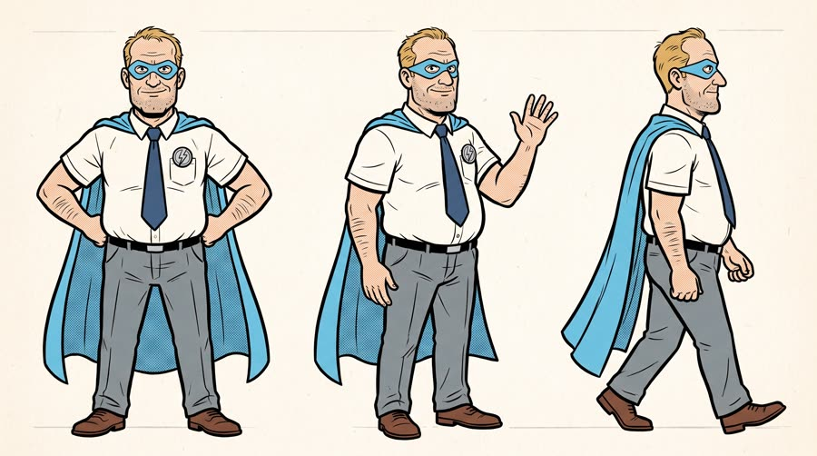
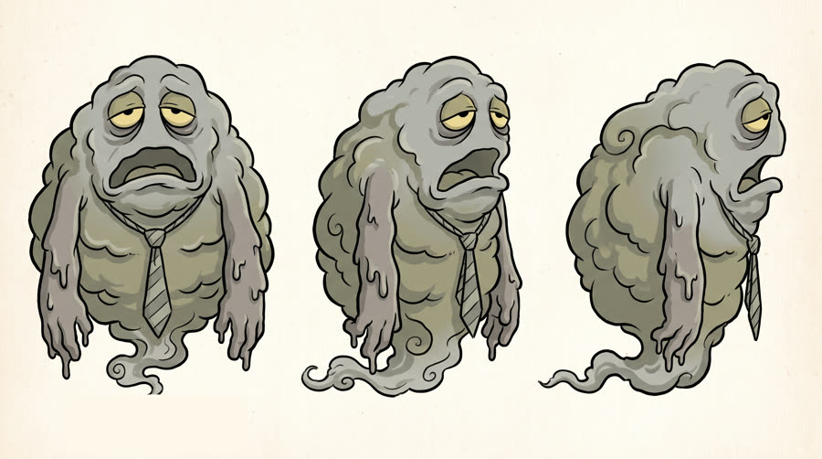
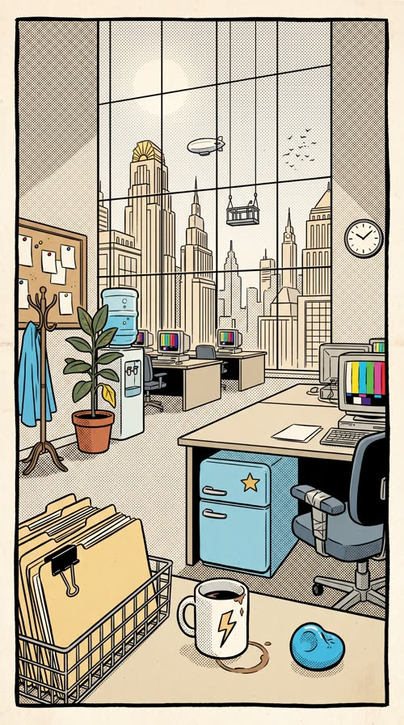
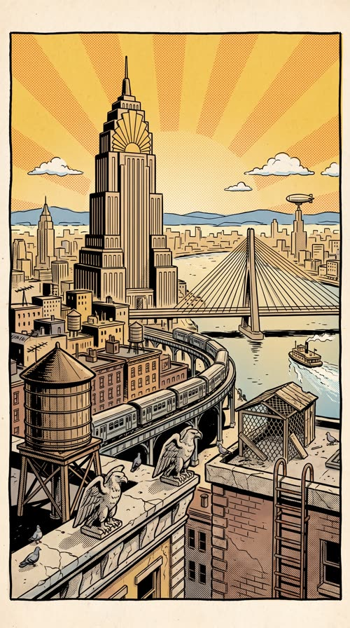
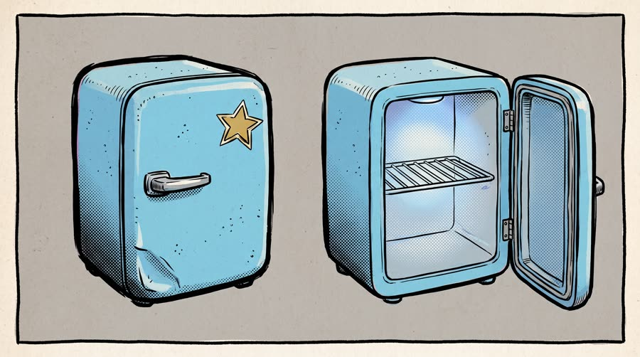
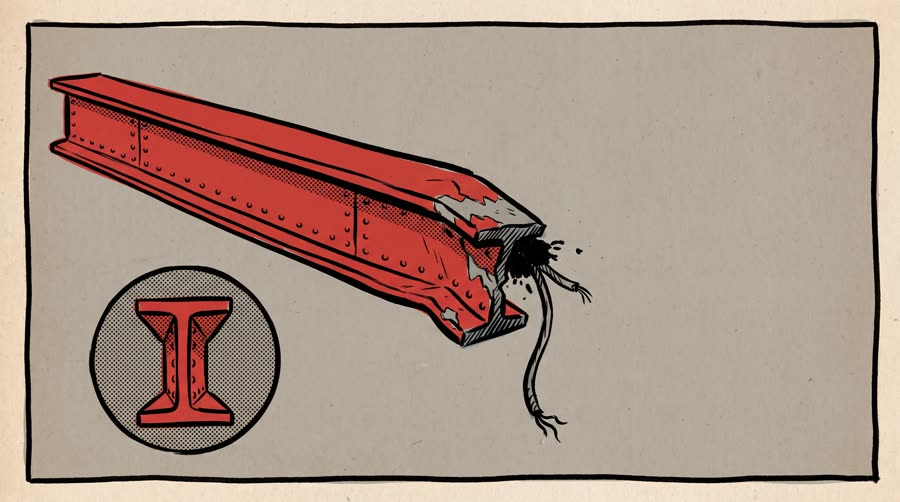
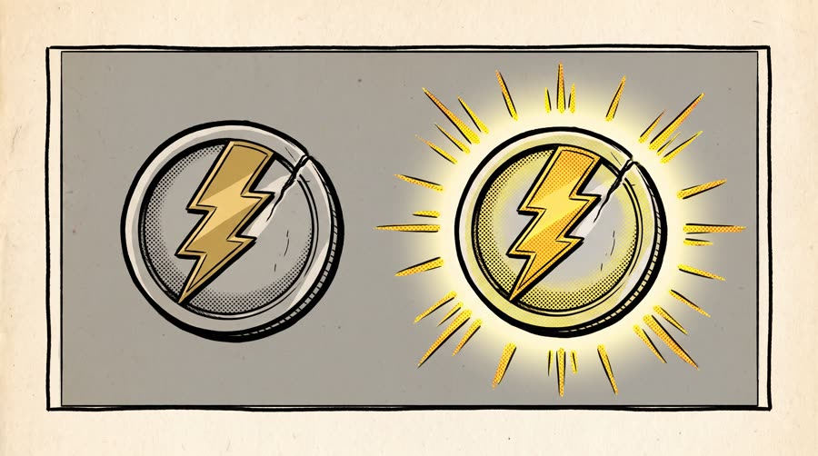

Captain 3pm
Captain 3pm is the strongest man in Brightwater City until three o'clock, when the Slump rolls in and his powers run out. Then comes issue #2, and Red Bull Sugarfree.
Comics compress a problem, a villain and a victory into panels the eye reads in a second, so a relatable pain (the afternoon slump) can be turned into a literal villain and beaten on screen. The printed-page texture and the page-turn device stop the scroll, and the panel-by-panel reading gives natural beats for captions. Illustrated and animated ads are the breakout AI format of 2026; the comic variant stands out because almost nobody runs it.
Contact sheet
One keyframe per shot, with the caption as it will appear.


Cast and world

Voice: big, warm, old-radio heroic, self-aware, American

Voice: slow, low, yawning, syrupy


World. The fictional comic book Captain 3pm, set in the fictional Brightwater City: a sunny art-deco skyline and the open-plan office on the 41st floor of the fictional Pemberton Tower, where the hero works a desk job between rescues. Told as a printed comic page with a motion camera. Palette. Hero in sky blue and silver (from the can) with golden yellow sunbursts; the Slump and everything it touches in desaturated grey and olive; red for impacts. Colour floods back after the product.
Fictional brands. Captain 3pm (the comic title, lettered in post only); Brightwater City (the city); Pemberton Tower (his office building); The Slump (the villain)
World bible
Fixed with the concept: the lore, the objects and the textures that make this world specific. Only product-adjacent props change per product.
- Captain 3pm is a 32-page monthly comic printed on cheap newsprint by the fictional Harbourlight Comics. This is issue #2; issue #1 ended with the Slump escaping into the air vents of Pemberton Tower.
- By day Gord Pike processes claims at desk 41-17 on the 41st floor of Pemberton Tower. He has saved Brightwater City 212 times, every single save before three in the afternoon.
- The Slump first rose out of the Brightwater harbour fog in 1987, the year the city moved to open-plan offices. It feeds on yawns and gets bigger every hour after lunch.
- Gord's cape was sewn by his daughter from an old sky-blue bedsheet; the collar is held on by a safety pin since the Slump tore it in issue #1.
- The desk fridge under desk 41-17 is the only one on the floor that anyone is afraid to open. It has a hand-drawn gold star sticker on the door.
Materials. Every object is drawn, not photographed: confident black brush ink with a thick outer contour and thin interior hatching, flat colour fills, Ben-Day halftone dots for every shadow and gradient (fine dots on skin and the can, coarse dots on walls and sky), solid spot blacks in the deepest shadows, slight CMYK misregistration where colour meets line, on slightly yellowed off-white newsprint with faint paper grain. The whole image is one single panel inside a thick hand-inked black border with slightly wobbly ruled edges and a thin white gutter; action may break the border. No lettering, balloons or sound effect words anywhere.
Wear and time. A Thursday, the page starts at 2:59pm and runs to about 3:10pm. Bright sunny afternoon outside, the office washed grey by the Slump until the product. Used: a half-drunk coffee gone cold, a squashed stress ball, a shredded morning of blank memos. Out of place: a sky-blue cape hanging on the office coat stand, and the Slump's grey drips on the carpet.
Signature objects



Set dressing by location
Foreground
a wire in-tray stacked with blank manila folders pinched by a big black binder clip; a chipped white coffee mug with a hand-drawn lightning bolt on it and a brown coffee ring on the desk; a sky-blue stress ball squashed flat with a thumbprint dent; a rolling office chair with a split armrest patched with grey duct tape; the small sky-blue desk fridge under the nearest desk with a chrome handle and a drawn gold star sticker on the door
Midground
rows of beige desks with chunky monitors showing only abstract coloured bars; a water cooler with a big blue bottle and a single bubble rising; a potted rubber plant with one yellowed drooping leaf; a cork board of blank white memos held by red, yellow and blue pushpins; a bentwood coat stand with a spare sky-blue cape on a wire hanger; a plain round wall clock with hands and simple tick marks and no numerals
Background
a floor-to-ceiling window with a thin black mullion grid; an invented art-deco skyline of stepped towers with sunburst crowns, no real landmarks; a window cleaner's cradle hanging on two cables outside the glass; a small blimp with plain unmarked sides drifting past; a flock of birds drawn as tiny ink ticks
Foreground
a rooftop wooden water tower with iron hoops and a conical lid; art-deco stone eagle gargoyles on a cornice, cracked and pigeon-streaked; a rooftop pigeon coop of chicken wire and planks; a rusty fire-escape ladder climbing a brick wall
Midground
Pemberton Tower, a tall stepped art-deco tower with a sunburst crown and a needle spire; a single-pylon cable-stayed bridge with fanned cables over the river; an elevated train on a curved steel viaduct; rows of brownstone rooftops with chimney pots and television aerials
Background
a wide river with a small paddle ferry leaving a white wake; low blue hills drawn with a single ink line; a golden yellow sky with a radiating coarse halftone sunburst; a zeppelin mooring mast on the tallest distant tower; small puffy clouds outlined in ink with flat white fill
- Gord: the plain silver circular badge with a lightning bolt, a scratch across one edge from issue #1; a navy tie with a small dark coffee blot near the tip; a sky-blue cape with a big steel safety pin holding the collar; a plain wristwatch with a cracked glass face and no numerals; an office lanyard with a blank white badge card
- The: a limp grey necktie with a loosened sagging knot hanging from its chest; a cloud of paper clips and staples orbiting its body like flies; a sagging grey office chair it drags behind it by one arm; a trail of grey drip puddles wherever it passes
- Captain 3pm: a silver circle with a gold lightning bolt, sky blue, silver and golden yellow. On: Gord's badge, his coffee mug (bolt only), the cover sunburst. Text in post: the comic title on the cover panel S01 and the end card only
- Pemberton Tower: a stepped tower silhouette with a sunburst crown, cream and gold. On: the tower itself in the skyline, the blank badge card shape. Text in post: none
- Harbourlight Comics: a small lighthouse in a circle, red on newsprint. On: cover corner box (added in post only). Text in post: issue number and price box on the cover only
the heavy thunk of a forehead meeting a keyboard; the tick of the plain wall clock; the suck and chrome clunk of the desk fridge door; the crack and hiss of the can; cape snap in the wind through an open window; wet fog tearing apart around a punch; papers fluttering off desks; a page turn rustle of newsprint
Beats
| Time | Beat | What happens |
|---|---|---|
| 0-2.4 | hook | Cover splash: Captain 3pm holding a falling steel beam above the city at noon. |
| 2.4-7.0 | setup | Three o'clock: he slumps at his desk, the colour drains, the Slump looms over the tower. |
| 7.0-14.4 | product | Page flip to issue #2: the can from his desk fridge, the crack, colour floods back, the brand line. |
| 14.4-21.0 | build | He flies out of the window and punches through the Slump in a full splash panel. |
| 21.0-24.6 | payoff | Five past three, the city sunny again, he is back at his desk, finishing the afternoon. |
| 24.6-30 | cta | Final panel: the can on his desk in a halftone sunburst, tagline and next-issue box. |
Screenplay
33 spoken words in 30 s. Each line keeps its intent (fixed in the template) and its wording (written for this product).
| Time | Speaker | Line | Intent (template) |
|---|---|---|---|
| 0.3-2.2 | Gord | By noon, I'm unstoppable. big old-radio heroic narration, chest out | Hook: the hero's best self, stated as a brag the viewer suspects will not last. |
| 2.8-4.6 | Gord | By three? Not so much. deflated, face on the desk, comic timing | The problem everyone recognises, landed as a joke. |
| 5.2-6.8 | The | Nap time, Captain. slow, syrupy, a yawn in the middle | The problem, personified as the villain, taunts the hero. |
| 7.6-8.8 | Gord | Not this issue. quiet, determined, a grin starting | The turn: the hero refuses the old ending as the new issue begins. |
| 11.6-14.2 | Gord | Red Bull Sugarfree. Less tired, no sugar. heroic, restored, straight to the reader · Say: RED BULL SHUG-er-free, three clear words | Product line: name the product and the benefit that defeats this villain, using an allowed claim only. |
| 18.6-20.2 | Gord | Afternoon's cancelled. shouted mid-punch, joyful | The hit line: the problem is beaten. |
| 22.0-24.0 | Gord | Three oh five. Back to work. casual, pleased, loosening his tie | Payoff: the win lands back in real life, with a wink. |
| 26.8-28.8 | Gord (off camera) | Wiiings without sugar. warm heroic voiceover, like the end of a radio serial · Say: WINGS, stretch the vowel slightly | Tagline in the brand's own words. |
Generation plan
U1 · 0 to 7.0 s · 7 s generation
Shots S01, S02, S03 · References: gord card, slump card, skyline plate, office plate, S01 keyframe as first frame
9:16 motion comic, printed comic art with bold inks, Ben-Day halftone and newsprint texture, panel borders visible, limited puppet-like character motion while the camera moves through the page. Shot 1 (0 to 2.4 s): push-in across a cover splash, @Image1 (Captain 3pm) holds a steel girder above a sunny city, cape snapping, and says in a big heroic voice: "By noon, I'm unstoppable." Shot 2 (2.4 to 4.8 s): the camera slides down through the white gutter into the next panel, he is face down on his office desk, colour drained to grey, and says, deflated: "By three? Not so much." Shot 3 (4.8 to 7 s): pan up the tower to @Image2 (The Slump), a colossal grey fog creature oozing over the top, who yawns slowly: "Nap time, Captain." Keep clean empty areas for lettering added later. Native sound: wind, cape flap, office hum, a long sigh, a deep rumbling yawn. No music. No letters or text anywhere.
U2 · 7.0 to 14.4 s · 8 s generation · exact-risk (short, cheap to re-roll)
Shots S04, S05, S06 · References: product can official, gord card, S04 keyframe as first frame
9:16 motion comic, bold inks and halftone. Shot 1 (0 to 2 s): a paper page flips to reveal a new page; in its first panel a hand opens a small desk fridge, sky-blue light spills around the exact can from @Image1 inside, and @Image2 (Captain 3pm) says quietly: "Not this issue." Shot 2 (2 to 4.4 s): locked hero panel, his fist raises the can against a sky-blue and yellow halftone sunburst and cracks the ring pull. Shot 3 (4.4 to 8 s): push-in as colour floods back into the office, cape lifting, badge glowing, he holds the open can at chest height with the label readable and says to the reader: "Red Bull Sugarfree (said RED BULL SHUG-er-free, three clear words). Less tired, no sugar." The can is inked in comic style but keeps the shape, colours, red wordmark, two red bulls, gold sun and SUGARFREE exactly as @Image1. Native sound: paper page flip, fridge door, the can crack and fizz, cape whip. No music. No letters or text.
U3 · 14.4 to 24.6 s · 11 s generation
Shots S07, S08, S09 · References: gord card, slump card, skyline plate, S07 keyframe as first frame
9:16 motion comic action, bold inks, halftone, speed lines, 2.5D parallax. Shot 1 (0 to 2.8 s): @Image1 (Captain 3pm) bursts out of the office window fist first, cape streaming, papers flying. Shot 2 (2.8 to 6.6 s): full splash panel, he punches through the centre of @Image2 (The Slump), which bursts into chunks of grey fog as golden light blasts through and the city turns bright; he shouts with joy mid-punch: "Afternoon's cancelled." Shot 3 (6.6 to 11 s): the camera slides through the gutter to a calm panel, he is back at his desk in the sunny office, cape over the chair, loosening his tie, an open silver and blue can beside the keyboard, and says casually: "Three oh five. Back to work." Keep clean empty areas for lettering. Native sound: whoosh, a huge punch impact, fog bursting, office hum, birds. No music. No letters or text.
U4 · 24.6 to 30 s · 6 s generation · exact-risk (short, cheap to re-roll)
Shots S10 · References: product can official, S10 keyframe as first frame
9:16 motion comic final panel. Slow push toward the exact can from @Image1 standing open and upright on an office desk, label to camera, inked in comic style with bold white highlights, a sky-blue and golden halftone sunburst rotating slowly behind it, the corner of a sky-blue cape at the edge of frame. The can does not move or change shape. Keep the top third and a bottom strip as clean empty areas. Native sound: soft office ambience, a page settling. No music, no letters or text.
Sound, music, voice, captions
| 0 to 2.4 s | cover | Brassy retro superhero march fanfare, bright trumpets and snare, B flat major, 120 bpm. |
| 2.4 to 7.0 s | slump | The same fanfare slows down like a record losing power, a droopy trombone slide, tuba and a lazy clock tick. |
| 7.0 to 24.6 s | issue two | Snare roll on the page flip, a brass stab exactly on the can crack, then the full march at double energy with timpani under the punch and a playful pizzicato tag for back to work. |
| 24.6 to 30 s | final panel | The fanfare theme resolves on a big held major chord with a cymbal swell, like a serial's closing sting. |
Added sound
- 7.0 s: paper page flip (the issue change is the story hinge and must read as a page turning)
- 9.8 s: can crack and fizz (the product moment must register; paired with the KSSHHK lettering)
- 18.2 s: big punch impact (sells the KA-POW splash)
- Gord: native voice from U1, then his U1 vocal stem as voice reference for U2, U3 and the tagline voiceover
- The: native in U1, pitched down 2 semitones with a slight slow-down in post if the native read is not heavy enough
font: Comic lettering face (a Wild Words style hand-letter font, all caps), size: 4.2% of frame height inside balloons, color: #111111 text in white balloons with a 3px black outline and a tail to the speaker, active word: the word being spoken is set in bold italic, as comic letterers stress words, shadow: none; balloons have a hard 3px black outline, position: inside the clean area each keyframe leaves for it, never over faces or the product; narration in yellow rectangular caption boxes at panel tops, max words on screen: 7, box: True, sfx lettering: SFX (KSSHHK, WHOOSH, KA-POW) in a heavy display face with a yellow to red fill, black outline and a 3D drop, animated with a 3 frame scale pop, balloon types: round white balloons for speech, a wobbly grey balloon with drippy edges for the villain, a jagged burst balloon for shouts, rule: every word of lettering is rendered in code in post; keyframes contain no letters at all
Post text- 0 to 2.4 s: CAPTAIN 3PM / #1 (comic cover masthead in the clean top area: heavy display face, sky-blue fill, black outline, silver 3D extrude; issue number in a small yellow corner box)
- 0.3 to 6.8 s: Speech balloons for L1, L2 and L3 / (round white balloons for Gord with tails to his mouth, a wobbly drippy grey balloon for the Slump, placed in each panel's clean area)
- 2.4 to 4.8 s: 3:00 PM. / (yellow rectangular narration caption box at the panel top)
- 7.0 to 9.0 s: ISSUE #2 / (masthead-style tag on the new page as it flips, yellow box, black lettering)
- 9.6 to 11.0 s: KSSHHK! / (SFX: heavy display face, yellow to red fill, black outline, 3D drop, 3 frame scale pop, bursting from the can top)
- 14.6 to 16.6 s: WHOOSH! / (SFX along the speed lines, sky-blue fill, black outline)
- 17.6 to 20.4 s: KA-POW! / (SFX in the clean burst area, red and yellow, largest lettering in the film, with a 2 frame shake)
- 11.6 to 24.2 s: Speech balloons for L4 to L7 / (round white balloons, a jagged burst balloon for L6)
- 21.0 to 24.6 s: 3:05 PM. / (yellow narration caption box at the panel top)
- 26.4 to 30 s: Red Bull Sugarfree / Wiiings without sugar (comic masthead face, white with a black outline, centred in the clean sunburst area above the can)
- 27.6 to 30 s: NEXT ISSUE: every afternoon at 3. / (yellow next-issue box in the clean bottom strip, black comic lettering)
Adaptation contract
How this same concept takes any physical product.
| Product type | Where it sits in the story | Scale |
|---|---|---|
| ingested | on the issue #2 page turn he takes it from his desk fridge, cracks it and drinks; the panel floods with colour | hand |
| applied | he applies it in the office restroom mirror and his costume colours ink back in | hand |
| worn | the new gear he puts on in issue #2 (shoes, glasses, jacket, watch) restores the powers | body |
| handheld | the gadget he pulls from his desk drawer (earbuds, bottle, tool) charges his emblem | hand |
| carried | the bag or case he unzips under his desk glows like a utility belt | hand to lap |
| home | issue #2 opens in his apartment: the thing he sleeps on or comes home to is the origin of the new power | room |
| consumable | the pack or refill in his desk drawer he reaches for at 2:59 | hand |
Style bible
Look. Modern American comic art: bold confident black inks with varied line weight, spot blacks, flat cel colour overprinted with visible Ben-Day halftone dots, slight CMYK misregistration on the edges, off-white newsprint paper with a faint fibre texture. Every keyframe is a panel with a thick black border and a white gutter; the page edge can show. Dynamic foreshortening on action panels, a splash panel for the big hit, speed lines and burst shapes drawn as ink. Each panel leaves one clean flat area (sky, wall, gutter-side negative space) where balloons and SFX lettering are placed in post. The villain is a visual metaphor for the problem the product solves.
Camera. Motion comic camera: pans across a panel, push-ins into a single panel, a slide through the gutter into the next panel, a page flip for the issue change, and 2.5D parallax where foreground, character and background layers separate slightly. Characters move with limited, puppet-like motion (a blink, a cape ripple, an arm swing); the camera does most of the work. The product panel is locked with a slow push.
Light and texture. Comic lighting is graphic: hard rim light drawn as a colour shape, heavy spot-black shadows, a halftone sunburst behind heroic moments, and a sickly grey-green wash on everything the villain touches. Newsprint paper grain, halftone dot screen visible at close range, slightly off-register colour plates, ink bleed on thick lines. No gradients that look digital, no photoreal skin, no 3D.
Pacing. Hook in under 2 seconds on a heroic splash with the title in post. One panel every 2 to 3 seconds, with the camera always moving between panels. The villain beat drops the colour. The page turn to the next issue is the hinge before the product; the product panel holds at least 1.5 s; the action splash is the longest beat; end on a calm final panel with a next-issue box.
Sound. Native sound from the generations: office room tone, city wind, cape flaps, the villain's low groan. Comic-specific: a real paper page-flip at the issue change, punchy foley under every SFX word (the SFX lettering is also heard). Score is a brassy retro superhero march, generated per movement and stitched at picture cuts.
Known failures.
- the model fills balloons and SFX bursts with gibberish letters: never ask it for balloons or SFX; ask for a clean flat empty area of sky or wall instead and draw balloons in post
- a panel border with multiple sub-panels invites the model to invent tiny text in every panel: one panel per keyframe, border around the whole frame
- the hero's chest emblem turns into a letter or a number: describe it as a plain silver circle with a lightning bolt, no letters or numbers
- clock faces sprout numerals that come back garbled: say a plain clock with hands and simple tick marks, no numerals
- the can gets inked into a generic soda or its bulls vanish under the halftone: say the can is inked in comic style but its label, red wordmark, two red bulls, gold sun and SUGARFREE are copied exactly from the product reference, halftone lighter on the can
- the photoreal product reference pulls the panel toward a photo: restate that the whole panel including hands is hand-inked comic art
- office screens show fake spreadsheets with pseudo-text: say the monitor shows only abstract coloured bars
- clock hands come back at the wrong time (asked for five past three, got five o'clock): only show a clock when the time is a simple hour, otherwise leave the clock out and give the time in a caption box
- a product held at arm's length in a medium panel shrinks and its label turns to mush: on the brand-line panel, bring the can into the foreground at about a third of the frame height
- character cards pick up a name label (THE SLUMP): say no name label; crop it off before the card is used as a video reference
- 'sunny city skyline' drifts to recognisable real towers: say an invented art-deco skyline with no recognisable real landmarks
- asking for action to break the panel border makes the model split the frame into two or three sub-panels: never ask for border breaks in the keyframe; say one single panel filling the frame, no sub-panels, no inset boxes, and add border breaks in post
- a silver badge or prop reference in the scene turns a plain forearm into a metal gauntlet: describe the bare forearm and rolled shirt cuff and say no armour
- world-depth dressing: detail lives in the office and rooftop plates (binder clips, lightning-bolt mug, water towers, gargoyles); keep the area around the hero and the can clean so both still read at phone size
Claims and cost
Claims used (all from the product page): B-group vitamins contribute to the reduction of tiredness and fatigue; Same benefits of the original Energy Drink, without sugar (tagline form)
Video estimate: 32 s of generation at $0.27/s = $8.64 first pass, $20 to 30 with retakes, plus about $1.5 music.